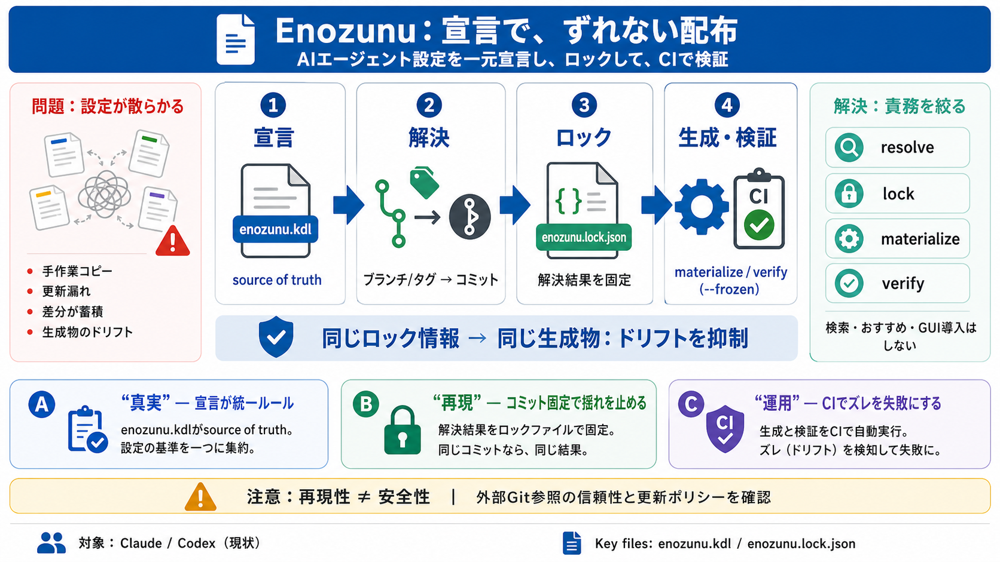

Deno 1.x to 2.x Migration Guide | Deno Docs
``` - function foo(file: Deno.File) { - function foo(file: Deno.File) { + function foo(file: Deno.FsFile) { + function f…

AIエージェントの設定ソースを集約し、同一内容を複数ツールへ再現性高く生成・配置する基盤です。
置き場所ごとに設定を手作業コピーすると、更新漏れや差分が起き、成果物が時間とともに揺れます。
宣言が分散 → 配布が手作業 → 差分が蓄積
ブランチ/タグ解決の揺れ → 生成物のドリフト
Enozunuは「探す」や「おすすめする」をせず、宣言された範囲をresolve / lock / materialize / verifyに限定します。
可変参照を解決
コミットを固定
ネイティブ配置へ生成
ロック外の変化を許さず、宣言と生成の一致を強制
開発者は enozunu.kdl に「どのSkill/agentのソースを、どのターゲットAIのどこへ展開するか」を宣言します。
Skill/agentの選択と展開先（ターゲットAI / 配置先）
“コピー運用”をやめ、生成の統一ルールを確立
ブランチ/タグのような可変参照は、初回実行で解決した具体的コミットとして enozunu.lock.json に記録します。
宣言（何を参照するか）
解決結果（どのコミットで生成するか）
enozunu summon を実行すると、初回は可変参照を解決し、その結果をロックへ反映した上で生成（materialize）します。
enozunu.kdl を読む
ブランチ/タグ → コミット決定
enozunu.lock.json に記録
ネイティブ配置へ materialize
同じロック情報 → 同じ生成物（生成の揺れを抑制）
CIでは enozunu summon --frozen を使い、ロック外の解決や差分があれば失敗させて逸脱を検知します。
ロックにない可変参照の解決は不可（失敗）
“知らないうちに参照が変わる”を早期に発見
Enozunuはマーケット検索やGUIのような“導入支援”ではなく、宣言の解決・ロック・生成・検証に責務を絞っています。
resolve / lock / materialize / verify（責任の限定）
検索・おすすめ・対話型導入（別導線が必要）
Enozunuの価値は、宣言の一元化、ロックによる再現性、そしてCIでの逸脱検知にあります。
宣言（enozunu.kdl）が統一ルールになる / Declaration
コミットを固定 / Lockfile（再現性）
CIでズレを失敗に / --frozen
強みは運用への組み込みやすさ。一方で、供給元の信頼性や成果物検証の粒度は別途確認が必要です。
宣言→生成→CI検証が明確 / “ロックなしは失敗”が効く
外部Git参照の供給元信頼が重要（提示情報だけでは未特定）
--update と --frozen の運用ポリシーが鍵
レビュー対象が宣言/ロックへ集約（粒度設計が必要）
現時点のターゲットAIは Claude / Codex に絞られ、責務も生成と検証に限定されています。
Claude / Codex（現状）／将来拡張の余地は未確定
導入/検索/マーケットはしない（別経路でSkill/agent入手が必要）
Enozunuは、enozunu.kdl の宣言をロックし、CIで検証することで、AIエージェント設定配布のドリフトを抑える設計です。
設定散逸と参照非再現性を、宣言・ロック・生成で抑制
ロック更新頻度、外部参照の信頼性、生成物検証の粒度
生成/検証基盤。検索やGUIは提供しない
``` - function foo(file: Deno.File) { - function foo(file: Deno.File) { + function foo(file: Deno.FsFile) { + function f…
- Migration instructions: “Before updating pnpm to v8 in your CI, regenerate your pnpm-lock.yaml. To upgrade your lockfi…
Ink-2, our state-of-the-art streaming STT model — Build responsive real-time voice experiences with built-in turn detect…
> ## Documentation Index > > Fetch the complete documentation index at:</llms.txt> > > Use this file to discover all ava…
## 49.0.0 - 2026-06-12 [...] Changelog View page source # Changelog ## 51.0.0 - main This version is not yet rele…